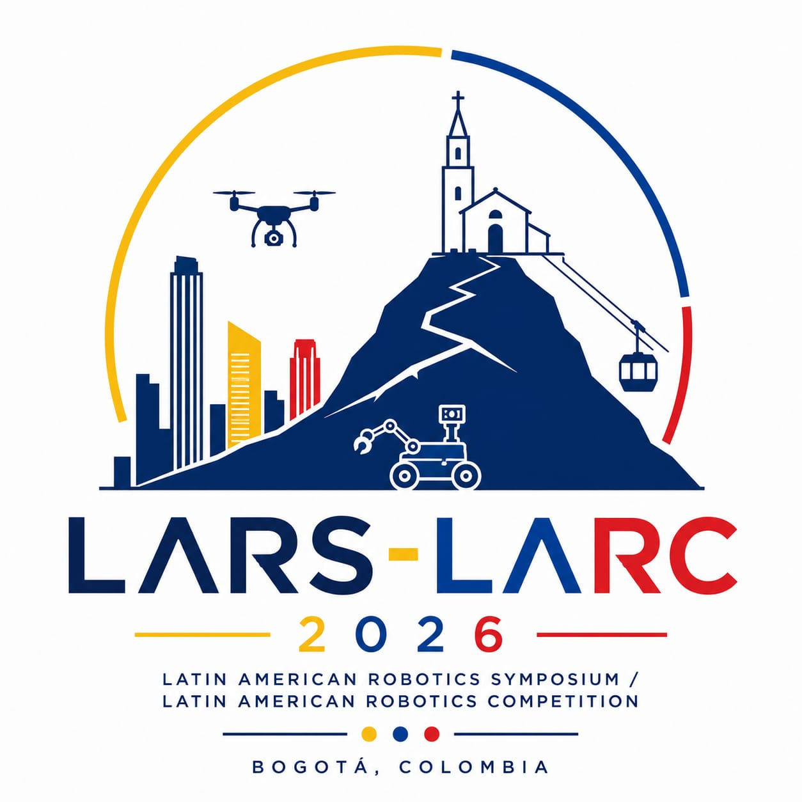

07:30–08:30

IEEE Latin American Robotics Symposium (LARS) Program
November 4–6, 2026 · Bogotá, Colombia
Three days at a glance · Parallel sessions aligned by time
Wednesday · November 4
| Time | Wednesday · November 4 | Thursday · November 5 | Friday · November 6 | |||||
|---|---|---|---|---|---|---|---|---|
| 07:30 | Registration | |||||||
| 08:00 | Registration | |||||||
| 08:30 | Welcome CeremonyChair: Robinson JimenezLocation: Aula Máxima | Coffee | Coffee | |||||
| 09:00 | Session 4AMulti-UAV PlanningLocation: Auditorio German Arciniegas4 papers & details → | Session 4BRobotic GraspingLocation: Auditorio Esteban Jaramillo4 papers & details → | Tutorial 2 - Part 1: Aplicación básica de LLM para el control robóticoPresenter: Fabio Nicolas OsorioLocation: Aula especial D202 | |||||
| 09:30 | Plenary Talk: Fundamental Challenges in Robotics and Embodied AIPresenter: Dr. Steven M. LaValleChair: David SaldañaLocation: Aula MáximaTalk details & biography ↗ | Session 7ALocalization & SensingLocation: Auditorio German Arciniegas3 papers & details → | Session 7BRobot Design & EducationLocation: Auditorio Esteban Jaramillo4 papers & details → | |||||
| 10:00 | Coffee Break + Posters | |||||||
| 10:30 | Coffee Break | Coffee Break | ||||||
| 11:00 | Plenary Talk: The Dynamics of Fluid Physical Interaction: Safe, Adaptive, and Compliant Robot IntelligenceDr. Nadia FigueroaChair: Diana OvalleLocation: Aula MáximaTalk details & biography ↗ | Plenary Talk: Robotics in Adverse Conditions: Overcoming Sensing, Communication, and Uncertainty ChallengesPresenter: Dr. Leonardo BobadillaChair: Juan CalderonLocation: Aula MáximaTalk details & biography ↗ | Plenary Talk: Presenter: Dr. Arturo FornerChair: Robinson JimenezLocation: Aula MáximaTalk details & biography ↗ | |||||
| 11:30 | ||||||||
| 12:00 | Lunch | Lunch | Lunch | |||||
| 12:30 | ||||||||
| 13:00 | Session 1AUAV AutonomyLocation: Auditorio German Arciniegas4 papers & details → | Session 1BAssistive & Rehabilitation RoboticsLocation Auditorio: Esteban Jaramillo4 papers & details → | Tutorial 1 - Part 1: From Concept to Machine: Mechanical Design, 3D Design, Digital Fabrication, and AI as a Prototyping ToolPresenter: Manuel José RodríguezLocation: Aula especial D201 | Session 5AMobile Robot NavigationLocation: Auditorio German Arciniegas3 papers & details → | Session 5BIndustrial ManipulationLocation: Auditorio Esteban Jaramillo3 papers & details → | Tutorial 2 - Part 2: Aplicación básica de LLM para el control robóticoPresenter: Fabio Nicolas OsorioLocation: Aula especial D202 | Session 8AMobile & Service RobotsLocation: Auditorio German Arciniegas3 papers & details → | Session 8BEnvironmental MonitoringLocation: Auditorio Esteban Jaramillo4 papers & details → |
| 13:30 | ||||||||
| 14:00 | Coffee Break | Coffee Break + Posters | Coffee Break | |||||
| 14:30 | Session 2AUAV Navigation & ControlLocation: Aula Especial D2014 papers & details → | Session 2BHuman-Robot InteractionLocation: Aula Especial D2024 papers & details → | Coffee Break | Plenary Talk: Collective Robotic Intelligence for On-Orbit Servicing, Cooperative Transport, and Shape-Morphing FlightPresenter: Dr. Rafael FierroChair: SaldañaLocation: Auditorio German ArciniegasTalk details & biography ↗ | Panel: The Future of Robotics in Latin AmericaLocation: Auditorio German Arciniegas | |||
| 15:00 | Tutorial 1 - Part 3: From Concept to Machine: Mechanical Design, 3D Design, Digital Fabrication, and AI as a Prototyping ToolPresenter: Manuel José RodríguezLocation: Aula especial D201 | |||||||
| 15:30 | Session 3AMapping & SLAMLocation: Aula Especial D2014 papers & details → | Session 3BAgricultural Robot VisionLocation: Aula Especial D2024 papers & details → | Session 6AMulti-Robot & Swarm SystemsLocation: Aula Especial D2013 papers & details → | Session 6BEmbedded MechatronicsLocation: Aula Especial D2024 papers & details → | Session 9ALegged Robot LocomotionLocation: Auditorio German Arciniegas4 papers & details → | Session 9BRobot Learning & Embodied AILocation: Auditorio Esteban Jaramillo4 papers & details → | ||
| 16:00 | ||||||||
| 16:30 | -- TransportationBus at the Entrance | -- Walk to the Dinner Location | LARC/LARS - Award ceremonyChair: Robinson Jimenez Location: Auditorio Esteban Jaramillo | |||||
| 17:00 | Colombian Tejo Experience and Social NightAddress: Tejo La EmbajadaCarrera 24 #76-20Bogota | Dinner at theNH Collection Bogotá WTC RoyalAddress: Carrera 8A N 99-55, World Trade CenterBogota | ||||||
| 17:30 | ||||||||
| 18:00 | ||||||||
| 18:30 | ||||||||
Select a technical session to see its papers. Day headings and times stay visible.
Schedule, merged blocks and colors follow the visible “Program” tab. Paper titles and authors come from “LARS Technical Sessions.” Afternoon times use 24-hour format. Unconfirmed chair placeholders are labeled “To be confirmed”; other blank cells remain as in the source. Snapshot retrieved October 27, 2026.
Competition rounds, free practice and finals · VSSS, Open and SEK
| Time | Wednesday · November 4 | Thursday · November 5 | Friday · November 6 | |||||
|---|---|---|---|---|---|---|---|---|
| 07:30 | Registration Plenary Talk: Fundamental Challenges in Robotics and Embodied AIPresenter: Dr. Steven M. LaValleChair: David SaldañaLocation: Aula MáximaTalk details & biography ↗ Free Practice Free Practice Plenary Talk: The Dynamics of Fluid Physical Interaction: Safe, Adaptive, and Compliant Robot IntelligenceDr. Nadia FigueroaChair: Diana OvalleLocation: Aula MáximaTalk details & biography ↗ Free Practice VSSS Open Free Practice VSSS Open SEK | VSSS Open SEK Plenary Talk: Robotics in Adverse Conditions: Overcoming Sensing, Communication, and Uncertainty ChallengesPresenter: Dr. Leonardo BobadillaChair: Juan CalderonLocation: Aula MáximaTalk details & biography ↗ Free Practice Free Practice Plenary Talk: Collective Robotic Intelligence for On-Orbit Servicing, Cooperative Transport, and Shape-Morphing FlightPresenter: Dr. Rafael FierroChair: SaldañaLocation: Auditorio German ArciniegasTalk details & biography ↗ VSSS Open SEK | VSSS Finals Free Practice Plenary Talk: Biped gait stability controllers using models and machine learningPresenter: Dr. Arturo FornerChair: Robinson JimenezLocation: Aula MáximaTalk details & biography ↗ Free Practice Open Finals Free Practice Free Practice SEK Finals LARC/LARS - Award ceremonyChair: Robinson Jimenez Location: Auditorio Esteban Jaramillo | |||||
| 08:00 | ||||||||
| 08:30 | ||||||||
| 09:00 | ||||||||
| 09:30 | ||||||||
| 10:00 | ||||||||
| 10:30 | ||||||||
| 11:00 | ||||||||
| 11:30 | ||||||||
| 12:00 | ||||||||
| 12:30 | ||||||||
| 13:00 | ||||||||
| 13:30 | ||||||||
| 14:00 | ||||||||
| 14:30 | ||||||||
| 15:00 | ||||||||
| 15:30 | ||||||||
| 16:00 | ||||||||
| 16:30 | ||||||||
| 17:00 | ||||||||
| 17:30 | ||||||||
| 18:00 | ||||||||
| 18:30 | ||||||||
Wednesday · November 4
07:30
08:30
08:30–09:30
Free Practice
09:30
09:30–10:30
Plenary Talk: Fundamental Challenges in Robotics and Embodied AI
Presenter: Dr. Steven M. LaValleChair: David SaldañaLocation: Aula MáximaTalk details & biography ↗10:30
10:30–11:00
Free Practice
11:00
11:00–12:00
Plenary Talk: The Dynamics of Fluid Physical Interaction: Safe, Adaptive, and Compliant Robot Intelligence
Dr. Nadia FigueroaChair: Diana OvalleLocation: Aula MáximaTalk details & biography ↗12:00
12:00–13:00
Free Practice
13:00
13:00–14:00
VSSS
13:00–14:00
Open
13:00–14:00
Free Practice
15:00
15:00–16:00
VSSS
15:00–16:00
Open
15:00–16:00
SEK
Thursday · November 5
10:00
10:00–11:00
VSSS
10:00–11:00
Open
10:00–11:00
SEK
11:00
11:00–12:00
Plenary Talk: Robotics in Adverse Conditions: Overcoming Sensing, Communication, and Uncertainty Challenges
Presenter: Dr. Leonardo BobadillaChair: Juan CalderonLocation: Aula MáximaTalk details & biography ↗12:00
12:00–13:00
Free Practice
13:00
13:00–14:00
Free Practice
14:30
14:30–15:30
Plenary Talk: Collective Robotic Intelligence for On-Orbit Servicing, Cooperative Transport, and Shape-Morphing Flight
Presenter: Dr. Rafael FierroChair: SaldañaLocation: Auditorio German ArciniegasTalk details & biography ↗15:00
15:00–16:00
VSSS
15:00–16:00
Open
15:00–16:00
SEK
Friday · November 6
10:00
10:00–11:00
VSSS Finals
10:00–11:00
Free Practice
11:00
11:00–12:00
Plenary Talk: Biped gait stability controllers using models and machine learning
Presenter: Dr. Arturo FornerChair: Robinson JimenezLocation: Aula MáximaTalk details & biography ↗12:00
12:00–13:00
Free Practice
12:00–13:00
Open Finals
12:00–13:00
Free Practice
13:00
13:00–14:00
Free Practice
13:00–14:00
SEK Finals
16:30
16:30–17:30
LARC/LARS - Award ceremony
Chair: Robinson Jimenez Location: Auditorio Esteban JaramilloLARC competition schedule · November 4–6, 2026